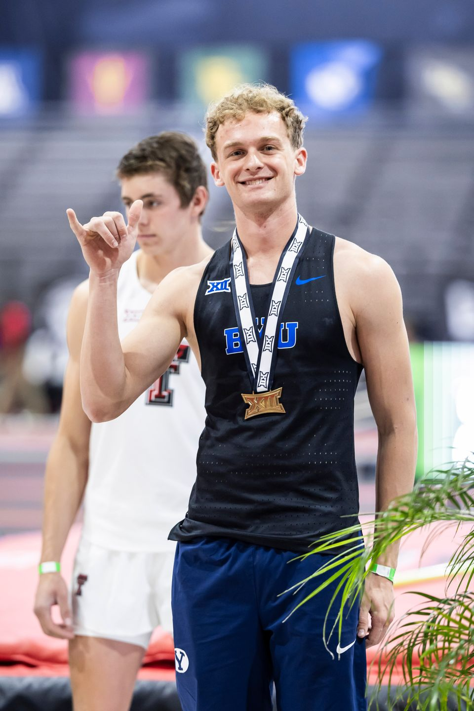

Professional Summary
Finance student-athlete at Brigham Young University with hands-on machining and operations experience.
Jump to Skills | Jump to Experience
Skills
- Heavy equipment operator
- NCAA D1 track and field athlete
- 3D design
- CNC machinist experience
Resume
Education
Brigham Young University - Provo, UT
Bachelor of Science: Finance (Expected May 2029)
NCAA D1 Track and Field Scholarship
Experience
Brigham Young University Men's Track and Field - Pole Vault, Provo, UT (May 2021 - Present)
- Train 6 to 8 hours daily to maintain elite performance.
- Apply coaching feedback and time management to balance athletics and academics.
Dirty T LLC - CNC Machinist Intern, Houston, TX (Jun 2022 - Aug 2022)
- Programmed, set up, and operated CNC lathes and mills to exact specifications.
- Performed quality inspections using calipers, micrometers, and gauges.
- Reduced downtime through preventative maintenance and troubleshooting.
Harris County Clerk's Office - Election Poll Worker, Houston, TX (Jun 2021 - Jun 2022)
- Operated and troubleshot voting machines to maintain smooth operations.
- Coordinated polling station setup and breakdown in compliance with procedures.
Volunteer Service: Full-time Representative, Lima, Peru (Jul 2023 - Jun 2025) - supervised teams, submitted weekly reports, and worked in Spanish.

About Me
I am committed to high performance in both athletics and professional work. I thrive in fast-paced, technical environments that require precision, discipline, and teamwork.
Contact
Phone: (801) 623-3025
Email: sizimmerman.04@gmail.com
LinkedIn: www.linkedin.com/in/byugoat